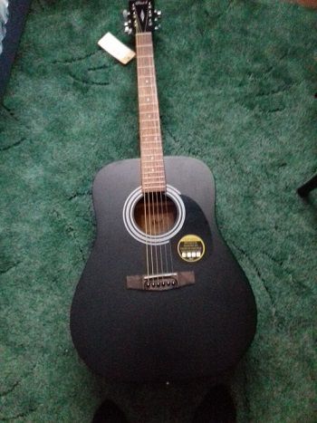

Hello! My name is Daniil, i am 17 years old, and this is my website. I am writing here about my thoughts and hobbies.
I hope you enjoy my posts!
In September 2021, i've been really bored, so i started documenting my life. First, i write only about video games, computers, and privacy, but later i start writing about everything interesting to me, like music.
I am a minimalist and a perfectionist, so usually i find myself rewriting articles because they're not simple enough.
I write some simple software, and play musical instruments: an acoustic guitar and a melodica.
Cort AD810
When i want to take a break, i take almost anything in my hands, like drawing.
I like to listen to alternative rock, experimental, and electronic music. And the most influential artists are:
I want to create a comfortable place for my readers as if they are at home.
These things i also like:
You always can write me with some questions or just with wish to talk by this link.